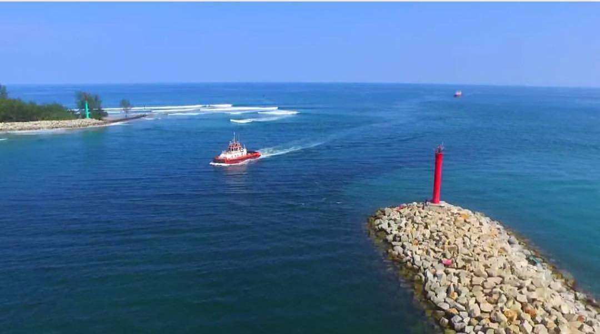

Pantai Lentera Merah
Pantai Lentera Merah terletak di Kelurahan Pulau Baai, Kecamatan Selebar, Kota Bengkulu, hanya sekitar 7 km dari pusat kota. Ciri khas pantai ini adalah mercusuar berwarna merah yang menjorok ke laut dan menjadi ikon sekaligus penanda alur masuk ke Pelabuhan Pulau Baai. Diapit oleh tumpukan batu pemecah ombak, pantai ini menawarkan pemandangan yang sangat fotogenik, terutama saat senja ketika siluet mercusuar berpadu dengan langit jingga. Selain sebagai tempat bersantai dan berfoto, Pantai Lentera Merah juga populer sebagai spot memancing dan lokasi kemping yang ramai dikunjungi di akhir pekan. Fasilitas yang tersedia cukup memadai seperti toilet, mushala, warung makan, dan area parkir, dengan tiket masuk yang sangat terjangkau sekitar Rp5.000 hingga Rp10.000. Meskipun akses jalannya masih berupa pasir dan bebatuan, keindahan alam serta suasananya yang tenang menjadikan pantai ini salah satu destinasi favorit di Bengkulu.
Kembali